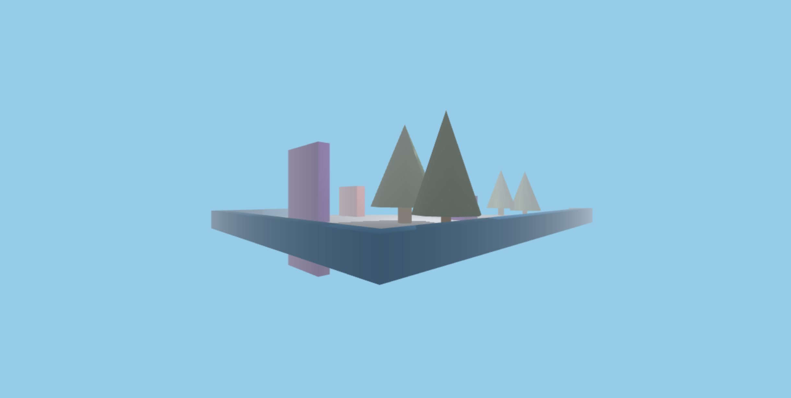
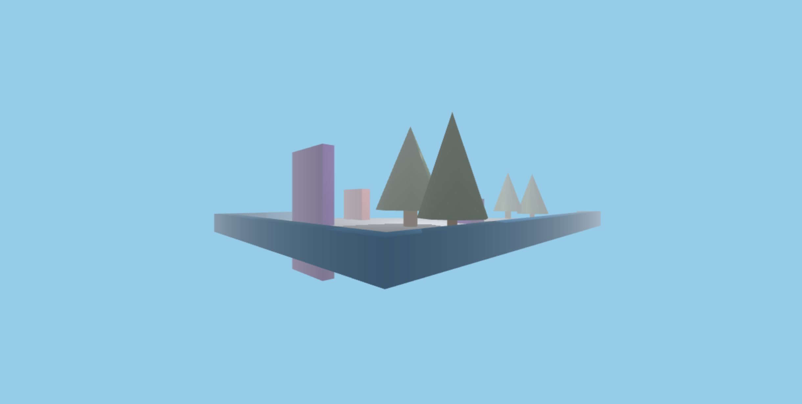

super mario 360

Super Mario 360 is an immersive first-person interactive game inspired by the iconic Super Mario Bros. Developed in collaboration with three teammates for a Computer Graphics and Imaging course, the project utilizes Three.js and WebGL to create a fully 360-degree explorable environment. Players can navigate freely using keyboard controls, collect coins, interact with objects and enemies, and engage in combat. The game features shooting mechanics, allowing players to break bricks, hit boxes, and defeat enemies, with a real-time on-screen counter tracking collected coins.
building the scene
We started by initializing the graphics world, which involved configuring the camera for first-person movement, setting up the scene with environmental elements like trees, bricks, and flowers, and optimizing lighting and rendering using WebGL. OrbitControls were added to enable smooth player navigation with keyboard inputs.
we created and integrated scene objects, including collectible coins, Goomba enemies, and interactive elements such as boxes and bricks. These objects were placed strategically to enhance gameplay and visual appeal.
 

Developing the Physics World
For realistic interactions, we developed a physics world using Ammo.js. This included assigning rigid bodies to objects, implementing raycasting for interaction detection, and using Ammo.js’s dispatcher for efficient collision handling.
we built first-person movement and shooting mechanics. Players navigate using WASD keys and spacebar, while Pointer Lock Controls enable intuitive mouse-based camera rotation. Shooting was implemented by spawning spheres with physics properties and casting rays into the scene to detect hits.
To implement collision detection, we implemented two types of collision detection. One way is using the Ammo javascript framework to calculate when an object collides. This algorithm works by iterating through all of the scene objects and calculating the distance between them, using a cache to speed up the process. More specifically, we first calculated the number of contact manifolds (cache of contact points between pairs of collision objects).


lessons learned
The biggest lessons we’ve learned from this project is that we need to work in an organized, communicative manner. By communicating effectively and coordinating how each piece of the project will fit together, we learned that this was the best way to approach the project and prevent interdependencies before diving straight into coding the project.
Another lesson we’ve learned is to not to underestimate the difficulty and scale of trying to create a game from scratch. After pivoting from our initial idea to utilize Unity 3D, we learnt that building a game from nothing is incredibly ambitious and impossible without meticulous planning and coordination.
On a technical level, we’ve learned to not only resolve Github merge conflicts but also how to utilize concepts from class such as Blinn-Phong shading, texture shading, point and ambient lighting, animation, and object detection to build a 3D game. Moreover, all of us had no prior experience working with the Three.js framework and with Javascript in general.
We learnt that it was vital to research thoroughly on documentation, video tutorials, and external forums to build our foundational knowledge of the framework. Then, with this knowledge, we were able to expand this to work with other Javascript frameworks.
Back to home
↩